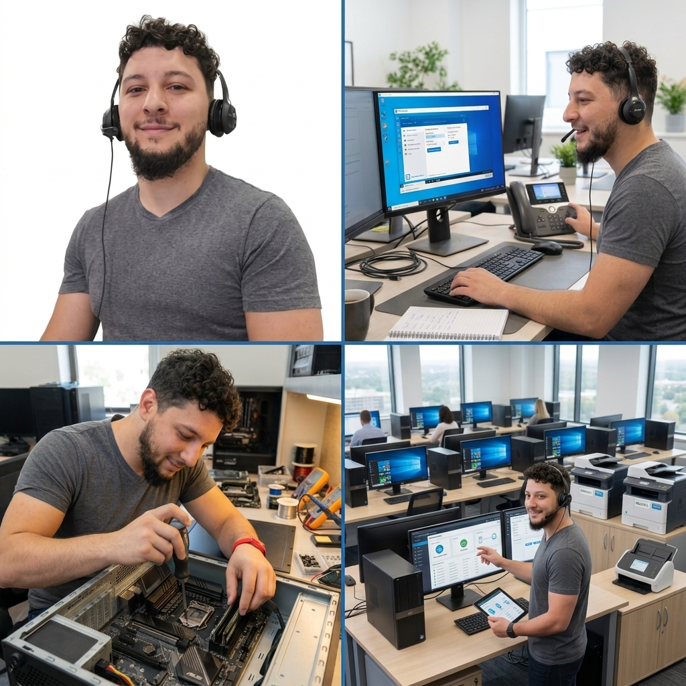

Soporte remoto y presencial
Atiendo incidentes desde la mesa de ayuda, registro cada caso y lo resuelvo a distancia o en el puesto de trabajo cuando hace falta.


Soy Lucas Vargas, técnico de soporte IT con más de 3 años de experiencia en mesa de ayuda y soporte de primer nivel. Ayudo a que computadoras, impresoras, celulares y redes funcionen sin interrupciones, resolviendo incidentes de forma remota o presencial y explicando cada solución de manera clara.
Atiendo incidentes desde la mesa de ayuda, registro cada caso y lo resuelvo a distancia o en el puesto de trabajo cuando hace falta.
Diagnostico fallas e instalo impresoras, escáneres, discos en red y otros periféricos. También me encargo del traslado y la puesta en marcha de equipos.
Configuro Windows y Office 365, gestiono usuarios en Active Directory y permisos de carpetas compartidas, y realizo backups en NAS.